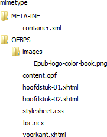

Epub wetenswaardigheden
Uitleg over het epub formaat.
Wat is EPUB
EPUB, ook wel geschreven als ePub en ePUB, is de afkorting voor Electronic publication. Het is een open standaard voor eboeken van het International Digital Publishing Forum (IDPF). Het open karakter houdt in dat iedereen gratis dit formaat kan gebruiken. De epub standaard bestaat zelf weer uit verschillende andere standaarden, zoals XHTML, CSS, NCX, …
Het epub bestand is in werkelijkheid een speciaal samengesteld zip bestand met de extensie .epub. De inhoud bestaat uit XHML en CSS bestanden, aangevuld met een aantal XML bestanden die er voor moeten zorgen dat het eboek door verschillende ereaders goed weergegeven wordt. Helaas interpreteert niet elke ereader een epub bestand op dezelfde manier. In het kort komt het er op neer dat de inhoud van een epub bestaat uit XHTML en de de metadata uit XML.
EPUB boeken kunnen worden weergegeven op pc’s, smartphones en de meeste e-readers. Vaak is op deze apparaten al een programma of app aanwezig waarmee je een ePub kunt lezen en een enkele keer moet je deze nog downloaden en installeren.
Een EPUB kent geen vaste pagina, de tekst is “reflowable”, wat wil zeggen dat deze zich aanpast aan de grootte van het scherm. Ook kan de gebruiker een groter of kleiner lettertype instellen, waardoor er ook minder of meer tekst op het scherm past. Verder kunnen in EPUB boeken ook afbeeldingen en links voorkomen, waardoor het effect veel weg heeft van een website.
Populaire programma’s of apps voor het lezen van een ePub:
- iBooks op iPad/iPhone/iPod
- Aldiko op Android apparaten
- Calibre voor Windows, OSX en Linux
- EPUBREADER plugin voor Firefox
- Readium plugin voor Chrome, http://readium.org/
- Adobe Digital Editions voor Windows en OSX
- Kindle, Nook en Kobo desktop en mobiele apps
- Azardi ePub3 Reader, oor desktop, gratis. http://azardi.infogridpacific.com/index.html
Verwante informatie
Website van het International Digital Publishing Forum (IDPF)
EPUB formaten
De epub specificatie wordt onderhouden door IDPF. Geschiedenis specificaties:
- oktober 2007: EPUB 2.0
- september 2010: EPUB 2.01
- oktober 2011: EPUB 3.0
- juni 2014: EPUB 3.0.1
- januari 2017: EPUB 3.1
De meeste epub bestanden zijn nog gemaakt volgens de 2.0.1. De 3.0 en hoger versies worden door de meeste ereaders nog niet ondersteund. Daarnaast heeft Apple nog een eigen epub formaat met de bestandsextensie .ibooks.
Epub versie 2.0.1
Epub versie 2.0.1 bestaat uit drie specificaties:
- Open Publication Structure (OPS) 2.0.1 Deze definieert de toegestane formaten (bijv. XHTML, CSS) en elementen (bijv. tags) welke gebruikt mogen worden voor de inhoud van het eboek en de opmaak ervan.
- Open Packaging Format (OPF) 2.0.1 Deze definieert de verplichte en optionele metadata en de structuur van de leesvolgorde en inhoudsopgave in een epub in XML termen.
- Open Container Format (OCF) 2.0.1 Deze verzamelt alle afzonderlijke bestanden in één ZIP bestand en definieert de mapstructuur (de volgorde van de bestanden) en het bestandsformaat (ZIP) van een epub.
Epub versie 3.0
Epub versie 3.0 bestaat uit vier specificaties:
- EPUB Publications 3.0 Deze definieert publication-level semantics and overarching conformance requirements for EPUB Publications.
- EPUB Content Documents 3.0. Deze definieert profielen voor XHTML, SVG en CSS voor gebruik in de context van epub publicaties.
- EPUB Open Container Format 3.0 (OCF) 2.0.1. Deze definieert het bestandsformaat en procesmodel om alle afzonderlijke bestanden op te nemen in één EPUB container, het ZIP bestand.
- EPUB Media Overlays 3.0. Deze definieert een formaat en procesmodel voor de synchronisatie van tekst en audio.
De belangrijkste kenmerken van EPUB 3 zijn:
- HTML 5
- CSS 3
- Javascript (en libraries)
- Video, Audio, read-aloud (SMIL)
- Tekst orientatie
- Unicode ondersteuning
- MathML
- SVG
EPUB 3.1
Overzicht: http://www.idpf.org/epub/31/spec/epub-overview.html
Specificaties: http://www.idpf.org/epub/31/spec/epub-spec.html
Wijzigingen vanaf 3.0.1: http://www.idpf.org/epub/31/spec/epub-changes.html
Interessant: http://blog.kbresearch.nl/2016/03/10/the-future-of-epub-a-first-look-at-the-epub-3-1-editors-draft/
Responsive Ebook Design: A Primer: https://medium.com/@sandersk/responsive-ebook-design-a-primer-8bba01328219#.ioy7m01le
ibooks formaat
iBooks is een (gratis) programma van Apple voor de iPad en iPhone. Hiermee kun je boeken lezen die gemaakt zijn in het PDF en EPUB formaat. In januari 2012 lanceerde Apple een nieuwe versie van iBooks tesamen met een nieuw programma iBooks Author (alleen voor de Mac) waarmee boeken gemaakt kunnen worden. Hierbij werd ook voor een nieuw bestandsformaat gekozen met de naam ibooks. Dit bestandsformaat is gebaseerd op EPUB waaraan Apple vervolgens wat afwijkingen en extra functionaliteiten heeft toegevoegd. Dit ibooks formaat is echter geen open formaat. Boeken in dit formaat kunnen alleen met het programma iBooks op de iPad gelezen worden.
Er zijn grote overeenkomsten tussen ibooks en EPUB3. Zo zijn er valide NCX en OPF bestanden. De XHTML bestanden zijn allemaal XHTML5. En er wordt veel gebruik gemaakt van SVG bestanden.
Maar er zijn ook verschillen tussen ibooks en EPUB3. Om er een paar te noemen:
Inhoud bestand mimetype is anders:
application/x-ibooks+zipEr wordt gebruik van eigen ongedocumenteerde CSS uitbreidingen. Voorbeeld
-ibooks-underline-type: none;De koppeling met CSS bestanden gebeurt niet via het LINK element maar via een declaratie in de vorm
<?xml-stylesheet href="*" type="text/css" media="*"?>De XHTML bestanden bevatten objecten met types zoals
application/x-ibooks+flowhead application/x-ibooks+shapeEr wordt gebruik gemaakt van eigen namespaces.
Door deze verschillen zijn boeken in het ibooks formaat alleen maar te lezen op een iPad en niet op andere apparaten.
The iBooks 2.0 textbook format, Baldur Bjarnason, 19-01-2012
The iBooks 2.0 built-in widgets, Baldur Bjarnason, 20-01-2012
The pros and cons of the iBooks 2.0 textbook format, Baldur Bjarnason, 21-01-2012
EPUB 2 structuur
De onderdelen van een epub 2 bestand.
De inhoud van een epub bestand krijg je te zien wanneer je dit bestand gaat uitpakken met een programma als winzip of 7zip. Wanneer je een epub gaat maken, dan stel je deze mapstructuur samen en pakt het daarna samen in één zip bestand.

De feitelijke boekinhoud zit in de XHTML bestanden en het CSS bestand verzorgt de opmaak. De andere bestanden zijn specifieke bestanden voor een epub en worden hierna besproken.
mimetype
Dit is een tekstbestand zonder extensie. Het moet het eerste bestand in de epub zijn, mag niet gecomprimeerd zijn en is voor alle epub bestanden hetzelfde. De inhoud bestaat uit één regel tekst met als inhoud:
application/epub+zipAttention: Precies 20 tekens en geen ENTER aan het eind van de regel!
META-INF map
Deze map bevat normaal gesproken één bestand met de naam container.xml. De inhoud van dit bestand is meestal als volgt:
<?xml version="1.0"?>
<container version="1.0" xmlns="urn:oasis:names:tc:opendocument:xmlns:container">
<rootfiles>
<rootfile full-path="OEBPS/content.opf" media-type="application/oebps-package+xml"/>
</rootfiles>
</container>Het enige wat hierin variabel kan zijn is de waarde van het attribuut full-path in het element rootfile. Deze waarde moet verwijzen naar de lokatie van het bestand content.opf in het epub bestand. Wanneer je altijd het bestand content.opf in de map OEPS plaatst, wat ook de afspraak is, dan kan het bestand container.xml voor elk epub bestand hetzelfde zijn.
- Wanneer je Calibre gebruikt om de epub te lezen, dan plaatst deze in de map META-INF een bestand met de naam calibre_bookmarks.txt waarin wordt bijgehouden waar je met het lezen gestopt bent. Een voorbeeld van de inhoud is:
calibre_current_page_bookmark^5#body|0.000000 - Wanneer de epub van DRM voorzien is, dan wordt in deze map ook een bestand encryption.xml in geplaatst.
- Wanneer je de epub met het programma Adobe Indesign maakt en daarbij ook fonts opneemt, dan wordt in deze map ook het bestand encryption.xml geplaatst.
- Voor verdere informatie over de inhoud van de map META-INF kun je de OCF specificatie raadplegen.
OEBPS map
In deze map staat de eigenlijke inhoud van het eboek. Volgens de IDPF specificatie hoef je de inhoud niet in een map met deze naam te zetten, maar het wordt wel aanbevolen. De map OEBPS bevat de volgende submappen en bestanden.
XHTML bestanden met de teksten.
CSS bestand(en) voor de opmaak.
submap, vaak met de naam images, voor de afbeeldingen (indien nodig). De afbeeldingen mogen ook in de map OEBPS staan.
submap, vaak met naam fonts, voor de letterfonts (indien nodig). De fonts mogen ook in de map OEBPS staan.
toc.ncx, een speciaal XML bestand dat door de ereaders gebruikt wordt om een navigeerbare inhoudsopgave (TOC = Table Of Contents) te genereren.
content.opf, een speciaal XML bestand dat de metadata van het boek bevat alsmede een lijst van de individuele bestanden die de inhoud vormen.
content.opf
Verplicht moet in de epub een Open Packaging Format (OPF) metadata bestand voorkomen. In principe mag dit bestand elke naam hebben, maar het is de gewoonte om dit bestand de naam content.opf te geven. In dit bestand wordt van alle bestanden die de inhoud van het eboek vormen, de naam en lokatie gespecificeerd. Verder bevat het nog een verwijzing neer een ander metadatabestand, de inhoudsopgave in het NCX (Navigation Control eXtended) formaat. Het OPF bestand is het meest complexe bestand in de epub standaard.
Het OPF bestand is een UTF-8 gecodeerd XML bestand met package als root element en bevat verder vier delen: metadata, manifest, spine en guide.
<?xml version="1.0" encoding="utf-8”?>
<package xmlns="http://www.idpf.org/2007/opf"
xmlns:dc="http://purl.org/dc/elements/1.1/"
version="2.0" unique-identifier="bookid">
<metadata>
...
</metadata>
<manifest>
...
</manifest
<spine>
...
</spine>
<guide>
...
</guide>
</package>Het OPF document zelf moet de namespace http://www.idpf.org/2007/opf gebruiken en de metadata moet in de Dublin Core Metadata Initiative (DCMI) namespace http://purl.org/dc/elements/1.1/ zitten.
metadata
In dit deel wordt de metadata van het boek gespecificeerd volgens de Dublin Core metadata elementen. Een voorbeeld:
<metadata>
<dc:title>Testboek</dc:title>
<dc:creator>Ben Welman</dc:creator>
<dc:identifier id="bookid">urn:uuid:sw12345</dc:identifier>
<dc:language>nl</dc:language>
<dc:date>2013</dc:date>
<dc:publisher>Softwijs</dc:publisher>
<dc:rights>http://creativecommons.org/licenses/by-nc/3.0/nl/</dc:rights>
<dc:description>Mijn eerste e-boek in het epub formaat.</dc:description>
<meta name="cover" content="cover-image" />
</metadata>De verplichte elementen zijn title, language en identifier. Volgens de EPUB specificatie moet de identifier een unieke waarde hebben. Het is aan de uitgever om deze waarde te bepalen. Vaak wordt hiervoor een ISBN nummer gebruikt, maar je mag ook een URL of een willekeurige string gebruiken.
Een meta element waarvan het attribuut name de waarde cover heeft, is geen onderdeel van de EPUB specificatie, maar wordt wel aanbevolen voor boekomslagen. Sommige e-boek readers geven de voorkeur aan een plaatje voor een boekomslag en andere readers aan een XHTML bestand waarin een plaatje is opgenomen. De waarde van het attribuut content moet de ID bevatten van het plaatje voor de boekomslag.
Important: De waarde van het dc:identifier element moet hetzelfde zijn als die gebruikt wordt in het dtb:ui meta element in het toc.ncx bestand, waarvan weer de waarde van het id hetzelfde moet zijn als de id van het unique-identifier attribuut in het package element.
Attention: Het woordenboek in iBooks werkt op dit moment alleen maar voor de Engelse taal en ook alleen maar wanneer “en” de waarde voor dc:language is.
manifest
In het onderdeel manifest moeten alle onderdelen worden benoemd die de inhoud van het e-boek vormen. Dus alle XHTML en CSS bestanden, de bestanden voor plaatjes en lettertypes, alsmede het toc.ncx bestand. Een voorbeeld:
<manifest>
<item id="ncx" href="toc.ncx" media-type="application/x-dtbncx+xml"/>
<item id="voor_cover" href="voorkant.xhtml" media-type="application/xhtml+xml"/>
<item id="hfst1" href="hoofdstuk-01.xhtml" media-type="application/xhtml+xml"/>
<item id="hfst2" href="hoofdstuk-02.xhtml" media-type="application/xhtml+xml"/>
<item id="style" href="stylesheet.css" media-type="text/css"/>
<item id="cover-image" href="images/Epub-book.png" media-type="image/png"/>
</manifest>Alle items hebben een bijbehorende waarde voor het attribuut media-type. Voor XHTML bestanden is de waarde ervan altijd application/xhtml+xml.
EPUB ondersteunt vier grafische formaten: JPEG, PNG, GIF en SVG.
De waarde van het href attribuut is relatief m.b.t het OPF bestand.
spine
In dit onderdeel staat de volgorde van de tekstbestanden voor het eboek. Wanneer de ereader aan het eind van een tekstbestand zit, dan staat in het spine deel wat het volgende bestand wordt. Dit is dus de lineaire leesvolgorde van het e-boek. Een voorbeeld:
<spine toc="ncx">
<itemref idref="voor_cover"/>
<itemref idref="hfst1"/>
<itemref idref="hfst2"/>
</spine>De waarden voor idref moeten hetzelfde zijn als de id van hetzelfde item in de manifest. Daarnaast kan eventueel het attribuut linear worden toegevoegd, waarmee aangegeven wordt of het item beschouwd moet worden als een onderdeel van de lineaire lees volgorde, dan wel een extra in de vorm van een voor- of achterkant. Een e-boek reader opent het e-boek met het eerste item waarvan de waarde NIET gelijk is aan linear="no". Wil je dus dat de reader als eerste begint bij hfst1, dan moet linear="no" aan het eerste itemref worden toegevoegd.
Attention: Het is van belang om na te denken over wat de lezer te zien moet ktijgen wanneer het e-boek voor de eerste keer geopend wordt. Enkele mogelijkheden: voorkant, inhoudsopgave, eerste hoofdstuk. Om de voorkant als eerste te tonen moet er een afzonderlijke XHTML pagina hiervoor gemaakt worden. Verder moet dit bestand als eerste genoemd worden in de sectie spine van het content.opf bestand met de waarde text voor van het attribuut type.
guide
De guide is het deel waarin de rol van elk XHTML bestand wordt aangegeven. Dit onderdeel is optioneel. Apple beveelt aan om het wel te gebruiken.De mogelijke rollen zijn: cover, title-page, toc, index, glossary, acknowledgements, bibliography, colophon, copyright-page, dedication, epigraph, forword, loi (list of illustrations), lot (list of tables), notes, preface en text. Voor het gebruik en betekenis zie de OPF 2.0 specificatie. Een voorbeeld:
<guide>
<reference type="cover" href="voorkant.xhtml"/>
<reference type="text" href=”hfst1.xhtml"/>
<reference type="text" href=”hfst2.xhtml"/>
</guide>toc.ncx bestand
Het toc.ncx bestand is een UTF-8 gecodeerd XML bestand dat zich moet bevinden in de OEBPS map. NCX staat voor (Navigation Control eXtended file for XML.Op zich mag het een andere naam hebben, zolang de bestandsextensie maar ncx is. Het toc.ncx bestand wordt door de readers gebruikt om een navigeerbare inhoudsopgave te genereren. Dit is wat anders dan een inhoudsopgave in het boek zelf.
Het toc.ncx bestand moet een valide XML bestand zijn. Een voorbeeld:
<?xml version="1.0" encoding="UTF-8"?>
<!DOCTYPE ncx PUBLIC "-//NISO//DTD ncx 2005-1//EN"
"http://www.daisy.org/z3986/2005/ncx-2005-1.dtd">
<ncx xmlns="http://www.daisy.org/z3986/2005/ncx/" version="2005-1"
xml:lang="nl">
<head>
<meta name="dtb:uid" content="sw12345"/>
<meta name="dtb:depth" content="1"/>
<meta name="dtb:totalPageCount" content="0"/>
<meta name="dtb:maxPageNumber" content="0"/>
</head>
<docTitle>
<text>Testboek</text>
</docTitle>
<navMap>
<navPoint id="voor_cover" playOrder="1">
<navLabel>
<text>Voorkant</text>
</navLabel>
<content src="voorkant.xhtml"/>
</navPoint>
<navPoint id="hfst1" playOrder="2">
<navLabel>
<text>Hoofdstuk 1</text>
</navLabel>
<content src="hoofdstuk-01.xhtml"/>
</navPoint>
<navPoint id="hfst2" playOrder="3">
<navLabel>
<text>Hoofdstuk 2</text>
</navLabel>
<content src="hoofdstuk-02.xhtml"/>
</navPoint>
</navMap>
</ncx>De verschillende onderdelen worden hierna besproken.
head
De head sectie moet vier meta-elementen bevatten:
- dtb:uid
-
De inhoud van content een tekst of code zijn welke uniek is voor het eboek. Deze moet hetzelfde zijn als dc:identifier in content.opf. Er zijn websites (google op “generate uuid”) die je daarbij kunnen helpen. De conventie is om de string te beginnen met urn:uuid:
- dtb:depth
-
De inhoud van content verwijst naar het aantal niveaus en subniveaus in het menu voor de TOC. Niveau 1 is voor voorkant, achterkant en hoofdstuktitels. Zijn er binnen de hoofdstukken paragrafen, dan wordt het niveau 2.
- dtb:totalPageCount
-
Niet van belang. Mag zo blijven, maar niet weggelaten worden.
- dtb:maxPageNumber
-
Niet van belang. Mag zo blijven, maar niet weggelaten worden.
docTitle
Het text element moet eigenlijk de titel van het boek bevatten, maar veel readers negeren dit. Veel aanbevelingen geven aan om dit toch maar in te vullen. De waarde moet gelijk zijn aan de waarde van dc:title in het OPF bestand.
pageList
Optioneel. Wordt nog niet breed ondersteund, maar is wel in opkomst.
(X)HTML tekstbestanden
De inhoud van een eboek is meestal over meerdere bestanden verdeeld. Zo kan elk hoofdstuk van het boek in één bestand zitten. Maar ook kleinere onderdelen als paragrafen kunnen in afzonderlijke bestanden worden ondergebracht.
Wanneer je voor elk hoofdstuk een eigen XHTML bestand maakt, dan zorgen de meeste ereaders er voor dat deze op een nieuwe pagina begint.
Voor een eventuele voorkant, achterkant, titelpagina, voorwoord, inhoudsopgave, enz. moet steeds een een eigen XHTML pagina gemaakt worden.
De beste keuze voor het bestandsformaat van deze bronbestanden is het XHTML 1.1 formaat. Ook HTM, HTML en XML werken in de praktijk wel. maar volgens de officiële specificatie is XHTML vereist.
Wanneer je de bestanden met een teksteditor maakt, denk er dan aan om deze in UTF-8 formaat op te slaan en niet in ANSI. Veel ereaders genereren anders fouten.
Een XHTML bestand in een epub heeft de volgende constructie:
<?xml version="1.0" encoding="utf-8"?>
<!DOCTYPE html PUBLIC "-//W3C//DTD XHTML 1.1//EN" "http://www.w3.org/TR/xhtml11/DTD/xhtml11.dtd">
<html xmlns="http://www.w3.org/1999/xhtml">
<head>
<title>Titel</title>
<link href="stylesheet.css" rel="stylesheet" type="text/css"/>
…
</head>
<body>
…
</body>De meeste HTML tags worden door epub ondersteund. Echter ook hier geldt weer dat niet alle ereaders alle toegestane tags ondersteunen. Om zoveel mogelijk ereaders te bedienen kun je het beter eenvoudig houden. De meest gebruikte tags zijn:
<p>voor paragrafen<h1>,<h2>, … voor titels en kopjes<ol>en<ul>voor lijsten<a>voor hyperlinks. Deze zijn in epub allemaal relatief.
Woorden markeren als vet of cursief kan beter via CSS geregeld worden.
Normaliter wijst een link naar het begin van het XHTML bestand:
<a href="hoofdstuk_3.xhtml">linktekst</a>Wanneer je naar een specifiek deel binnen een bestand wilt linken, dan moet je eerst een bladwijzer (bookmark) in dat bestand aanbrengen. De code hiervoor ziet er als volgt uit: <a name="samenvatting"></>
En de link naar deze plek:
<a href="hoofdstuk_3.xhtml#samenvatting">linktekst</a>Zie verder:
Volledige lijst van HTML tags die ondersteund worden in ePub.
Boekomslag
De voor- en achterkant van een boek kunnen een plaatje zijn, maar ook een XHTML bestand waarin een plaatje is opgenomen. Een voorbeeld:
<?xml version="1.0" encoding="utf-8"?>
<!DOCTYPE html PUBLIC "-//W3C//DTD XHTML 1.1//EN" "http://www.w3.org/TR/xhtml11/DTD/xhtml11.dtd">
<html xmlns="http://www.w3.org/1999/xhtml">
<head>
<link rel="stylesheet" type="text/css" href="stylesheet.css" />
<title>Testboek</title>
</head>
<body>
<h1>Testboek</h1>
<div><img src="images/Epub-book.png" alt="Afbeelding op voorkant"/></div>
</body>
</html>Daarnaast moet er nog het een en ander in de content.opf geregeld worden:
In de sectie metadata moet opgenomen worden welke afbeelding gebruikt moet worden. Het attribuut name moet altijd de waarde cover hebben en de waarde van het attribuut content moet gelijk zijn aan het id van de afbeelding zoals deze in het manifest is opgenomen.
<metadata> <meta name="cover" content="cover-image"/> ... </metadata>In de sectie manifest moet een verwijzing worden opgenomen naar zowel het bestand van de afbeelding als het XHTML bestand.
<manifest> <item id="voor_cover" href="voorkant.xhtml" media-type="application/xhtml+xml"/> <item id="cover-image" href="images/Epub-book.png" media-type="image/png"/> ... </manifest>In de sectie spine moet het XHTML bestand dat de voorkant vormt, als eerste genoemd worden. De waarde van idref moet gelijk zijn aan de id van het XHTML bestand in manifest.
<spine toc="ncx"> <itemref idref="voor_cover"/> ... </spine>In de sectie guide neem je het XHTML bestand op. De waarde van het attribuut type moet cover zijn.
<guide> <reference type="cover" href="voorkant.xhtml"/> ... </guide>
CSS
De opmaak van de inhoud van het eboek regel je via een CSS bestand. De mate van ondersteuning van CSS onderdelen kan weer per ereader verschillen.
Om van het CSS bestand gebruik te maken moet in elk .xhtml bestand de verwijzing naar het bestand in het head deel worden opgenomen:
<head>
<link rel="stylesheet" type="text/css" href="stylesheet.css"/>
</head>Voorbeeld stylesheet.css
/* Voorbeeld stylesheet voor een epub boek */
/* Zet de marges op 2% (Dat zorgt voor een witte rand om het boek) */
body{
margin-left:2%;
margin-right:2%;
margin-top:2%;
margin-bottom:2%;
}
/* Inspringen van een paragraaf, lettertype en uitlijnen */
p{
text-indent:.3in;
margin-left:0;
margin-right:0;
margin-top:0;
margin-bottom:0;
text-align:justify;
font-family:"Times New Roman";
}
/* Centreren en lettertype van de kopjes */
h1{
text-align:center;
font-family:"Arial";
}
h2{
text-align:center;
font-family:"Arial";
}Bundelen tot een zip
Het OEBPS Container Format deel van de EPUB specificatie geeft diverse voorschriften voor het EPUB en ZIP archiefbestand. De belangrijkste zijn:
- Het eerste bestand in het archief moet het bestand mimetype zijn. En het mimetype bestand mag niet gecomprimeerd zijn.
- Het ZIP bestand mag niet encrypt zijn. EPUB ondersteunt weliswaar encryptie, maar niet op het niveau van het ZIP bestand.
Voor het archiveren kunnen diverse programma’s gebruikt worden, zoals 7-zip (gratis) en winzip. Let er op dat je de acties via de commandoregel in twee stappen moet uitvoeren:
- Het maken van het zip bestand waarbij je alleen het bestand mimetype zonder compressie toevoegt.
- Het toevoegen van alle andere bestanden inclusief hun pad.
Bij 7-zip kun je hiervoor ook de 7-zip File Manager gebruiken.
Validatie
Het valideren van een EPUB kan met EpubCheck. Dit kan zowel voor epub 2 als epub 3 bestanden.
Online
Voor epub bestanden kleiner dan 10Mb kun je EPUB Validator van IPDF de epub laten controleren op fouten.
Offine
Voor grotere bestanden en commercieel gebruik moet je eerst het gratis Java programma EpubCheck downloaden van de EpubCheck projectsite.
Zie ook:
EPUB 3 structuur
De onderdelen van een epub3 bestand.
De structuur van een epub 3 bestand wijkt een beetje af van een epub2.
- Het attribuut version in de tag package vsan het OPF bestand:
<package version="3.0" ...\>in plaats van 2.0 - Het NCX bestand (met de TOC) is optioneel, maar wordt vanwege de compatibiliteit met de oudere leesprogramma’s meestal wel bijgesloten.
- De inhoudsopgave (TOC) is in de nav tag van een .xhtml bestand.
- De tekstbestanden hebben de xhtml extensie.
- XHTML 5 wordt gebruikt.
Testen van epubs
Minder bekend is dat e-boeken op verschillende platforms (Kindle, iBooks, Nook, Kobo, …) er anders uit kunnen zien. Hierna een mogelijk testproces.
- Calibre
-
Het handigste is om in Calibre een speciale bibliotheek voor testen aan te te maken.
- Adobe Digital Editions
-
Hiermee kun je ook zien hoe de epub geinterpreteerd wordt door systemen die de renderingengine van Adobe gebruiken, zoals Kobo, Nook en Sony, hoewel geen enkele de dingen precies weergeeft zoals ADE dat doet.
- Kindle Previewer
-
Deze converteert de epub naar een Amazon formaat en laat zien hoe deze eruit ziet op de verschillende Kindle platforms (Kindle Fire, Kindle Touch, Kindle DX, Kindle iPhone, Kindle).
- iBooks
-
Dit is de app van Apple voor iPad en iPhone. De gemakkelijkste manier om de epub te controleren, is door het bestand naar jezelf te e-mailen en vervolgens op het bestand op het iOS-apparaat te klikken. het apparaat zal jedan vragen met welk programma je het wilt openen. Kies dan iBooks.
- Kobo
-
Ook een app voor iPad en iPhone. Volg dezelfde werkwijze als voor iBooks en kies aan het eind om het bestand te openen met Kobo.
- Epubreader (Firefox addon)
-
Epub validator
Woordenlijst
- OEBPS
-
Open eBook Publication Structure. Formeel de naam van de standaard. Het is ook de naam van een map in het EPUB bestand.
- IDPF
-
International Digital Publishing Forum.
- EPUB
-
Electronic Publication. Een bestandsformaat voor digitale boeken.
Bronnen
Artikelen / Boeken
- Castro, Elizabeth. EPUB: straight to the point. Berkeley, Calif: Peachpit Press, 2011.
- Epub Format Construction Guide [Internet]. 2007, http://www.hxa.name/articles/content/epub-guide_hxa7241_2007.html
Websites
- Build a digital book with EPUB. Artikel IBM developerWorks
- Dublin Core elementen.
- Indesign CS5.5 to EPUB, Kindle, and iPad Tutorial van Anne-Marie Concepcion op Lynda
- eBook Architects.
- EpubCheck validatieprogramma. Een Java programma om epub bestanden te controleren.
- Epub Formatting Tutorials. Hoe je een Fixed-Layout eboek maakt voor iBooks en Kindle.
- EPub Secrets. Een website met nuttige artikelen en tips, o.a. page templates in epub3.
- EPUB Soft. Software en Tutorials over DRM verwijdering en conversie
- IDPF
- EPUB 3 Accessibility Guidelines
- EPUB Test. Testen van epub
- IDPF Github. Repositories, waaronder epub3-samples
- Website. Specificaties OPS, OPF en OCS
- Pigs, Gourds and Wikis Blog van Liz Castro.
- Responsive Ebook Design: A Primer
- Wiki MobileRead. Overzicht tools, lijst van toegestane XHTML elementen.